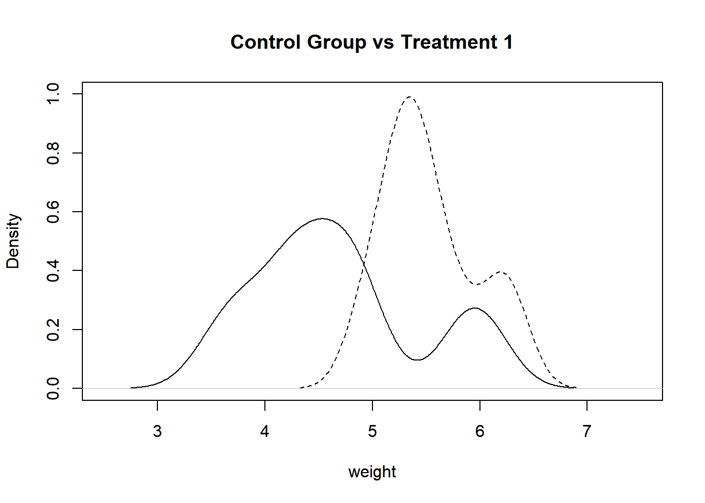

Chapter 7 Answers
7.1 Answer for exercise1
trt1_grp <- PlantGrowth[PlantGrowth[, 2] == "trt1",1]
trt2_grp <- PlantGrowth[PlantGrowth[, 2] == "trt2",1]
# plot density
plot(density(trt1_grp), main = "Control Group vs Treatment 1", xlab = "weight", xlim = c(2.5,7.5), ylim = c(0,1))
par(new = TRUE)
plot(density(trt2_grp), main = "", axes = FALSE, xlab = "", ylab = "", lty = 2, xlim = c(2.5,7.5), ylim = c(0,1))
##
## Welch Two Sample t-test
##
## data: trt1_grp and trt2_grp
## t = -3.0101, df = 14.104, p-value = 0.009298
## alternative hypothesis: true difference in means is not equal to 0
## 95 percent confidence interval:
## -1.4809144 -0.2490856
## sample estimates:
## mean of x mean of y
## 4.661 5.5267.2 Answer for exercise2
## Warning: package 'ggplot2' was built under R version 4.0.5A1
## [1] 15A2
##
## chevrolet dodge ford jeep land rover lincoln mercury
## 9 7 9 8 4 3 4
## nissan subaru toyota
## 4 6 8A3
## # A tibble: 41 x 11
## manufacturer model displ year cyl trans drv cty hwy fl class
## <chr> <chr> <dbl> <int> <int> <chr> <chr> <int> <int> <chr> <chr>
## 1 audi a4 1.8 1999 4 auto(~ f 18 29 p compa~
## 2 audi a4 2 2008 4 auto(~ f 21 30 p compa~
## 3 audi a4 quat~ 1.8 1999 4 auto(~ 4 16 25 p compa~
## 4 audi a4 quat~ 2 2008 4 auto(~ 4 19 27 p compa~
## 5 chevrolet malibu 2.4 1999 4 auto(~ f 19 27 r midsi~
## 6 chevrolet malibu 2.4 2008 4 auto(~ f 22 30 r midsi~
## 7 dodge caravan~ 2.4 1999 4 auto(~ f 18 24 r miniv~
## 8 honda civic 1.6 1999 4 auto(~ f 24 32 r subco~
## 9 honda civic 1.6 1999 4 auto(~ f 24 32 r subco~
## 10 honda civic 1.8 2008 4 auto(~ f 25 36 r subco~
## # ... with 31 more rowsA4
A5
mpg[mpg$model=="toyota tacoma 4wd","model"] <- "tacoma 4wd"
#or
mpg$model <- gsub("^toyota ", "",mpg$model)A6
A7
##
## audi chevrolet dodge ford jeep lincoln mercury nissan
## 18 9 37 16 8 3 4 4
## toyota
## 15A8
manufacturers <- unique(mpg$manufacturer)
sapply(manufacturers, function(x){
mean(mpg[mpg$manufacturer==x,]$cty)
})## audi chevrolet dodge ford honda hyundai jeep
## 17.61111 15.00000 13.13514 14.00000 24.44444 18.64286 13.50000
## land rover lincoln mercury nissan pontiac subaru toyota
## 11.50000 11.33333 13.25000 18.07692 17.00000 19.28571 18.52941
## volkswagen
## 20.92593A9
manufacturers <- unique(mpg$manufacturer)
sapply(manufacturers, function(x){
x <- mean(mpg[mpg$manufacturer==x&grepl('\\d',mpg$model),]$cty)
if(is.na(x)){0}else{x}
})## audi chevrolet dodge ford honda hyundai jeep
## 17.61111 12.66667 13.13514 12.93750 0.00000 0.00000 13.50000
## land rover lincoln mercury nissan pontiac subaru toyota
## 0.00000 11.33333 13.25000 13.75000 0.00000 0.00000 14.93333
## volkswagen
## 0.00000A10
mpg_summary <- data.frame(A=character(), B=character(), C=character(), D=character(),
E=character(), F=character(), G=character(), H=character(),
I=character(), J=character(), K=character(), L=character())
for(x in unique(mpg$manufacturer)){
subset <- mpg[mpg$manufacturer==x,]
A <- x
B <- length(unique(subset$model))
C <- mean(subset$displ)
D <- paste0(min(subset$year),"-",max(subset$year))
E <- mean(subset$cyl)
F <- paste(names(which(table(subset$trans)==max(table(subset$trans)))),collapse = "|")
G <- paste(names(which(table(subset$trans)==min(table(subset$trans)))),collapse = "|")
H <- max(subset$cty)
I <- min(subset$hwy)
J <- paste(unique(subset$fl),collapse = "|")
K <- subset$class[which.max(nchar(subset$class))]
largest_value <- max(gsub(".(\\d)","\\1",subset$trans_subtype[grepl("\\d",subset$trans_subtype)]))
L <- paste(unique(subset$trans_subtype[grepl(largest_value,subset$trans_subtype)]), collapse = "|")
mpg_summary[nrow(mpg_summary)+1,] <- c(A,B,C,D,E,F,G,H,I,J,K,L)
}A11